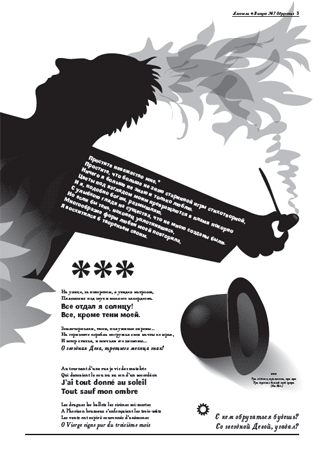
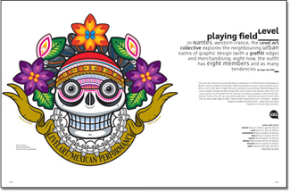
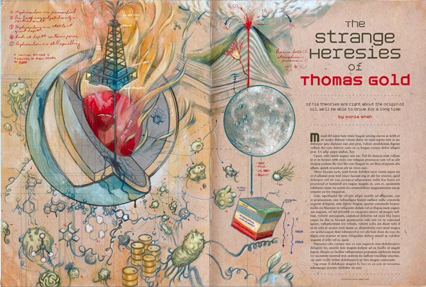
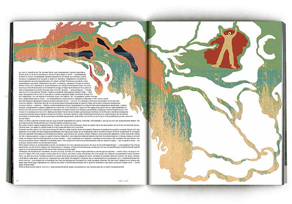
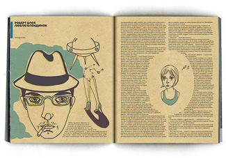
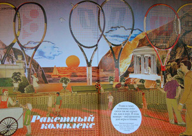
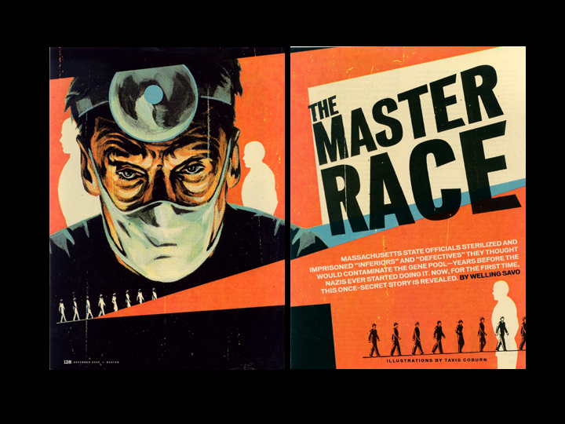

К АРТДИРЕКТОРАМ
nothing personal
Кто еще не в курсе, 21-го числа в Британской Школе дизайна Юрий Гордон откроет выставку своей книги-газеты «Alcools».

Я надеюсь, кого-нибудь она да вдохновит на подвиги.
Гордону хорошо, он сам себе иллюстратор и сам артдир, а нам, видать, до гроба рисовать прямоугольные иллюстрации. Это, конечно, некоторым образом дисциплинирует, и да, сами журналы всегда будут прямоугольными.
Но были ведь, были времена, когда можно и нужно было каждый раз выдумывать что-то новое, как-то выпендриваться, чего-то искать. Еще мне, может быть, возразят, что прямоугольник не смущал ни одного из великих живописцев, но (тут небольшое лирическое отступление) мы-то ведь с вами занимаемся чем-то совершено другим. Если уподобить классическую живопись шахматам, с их тысячелетней историей, жесткими правилами и миллионом готовых стратегий, то мы играем скорее в «Чапаева». Не так, может быть, благородно, зато действеннее, а главное, веселее. И чемпионы мира, according to Melamed, — те, кто, подобно одному известному книжному герою, умеет встать в полный рост и сделать противнику из шахматной доски воротник.

Thomas Gold Артдиректор Scott Anderson, Playboy

Не буду спорить, нынче в журналах можно найти множество смелых решений, какие-нибудь увеличенные jpg-артефакты, пиксели какие-то, какие-то крашеные градиентами звездочки — но все это, как правило, остается в рамках сетки. Я сейчас не про сугубо дизайнерские издания, где красивый ход зачастую есть самоцель; я даже, собственно, не по красивый дизайн — с ним в наших краях все вроде в порядке (я не очень, признаться, разбираюсь).
Я все понимаю, сетка сильно экономит время, да и незачем плодить сущности, стоит себе и стоит. Но дайте, дайте иллюстратору самому придумать полосу, а лучше, придумайте ее вместе, чем после покрывать готовую картинку дизайном (я уже не говорю о вопиющих случаях, один мой коллега специально оставляет на своих работах поля чуть не до середины — страхуется, как бы не обрезали по живому). Пусть верстальщик помучается для общего дела, ничего.
Маша Краснова-Шабаева

Юля Якушева

Case magazine, артдиректора Олег Нобр и Максим Чатский (отдельное спасибо за примеры).
опять Маша

Прямоугольные рамки — это, впрочем, полбеды; вернее, вообще не беда. Мне представляется, что именно на артдиректорах (при нынешней концентрации в нашем деле самоучек на систему образования пенять не приходится) в значительной степени лежит ответственность за то, что нынешняя российская иллюстрация никак не догонит и не перегонит Америку. У них, у артдиректоров, просто нет времени нас воспитывать, чему-то учить, добиваться от нас чего-то.
Поэтому, наверное, на страницах самых лакомых для иллюстратора изданий (например, в журнале Афиша, который столько сделал для российской иллюстрации и, видимо, устал) стали появляться западные гастарбайтеры. Не всегда, заметим, высшего класса (высшего, видимо, не по карману), но по многовековой традиции иностранная фамилия может в наших краях значить больше, чем собственно сделанная работа. Здесь мне видится некое зашифрованное сообщение: мол, кто надо у нас под рукой, а больше в тутошних омутах ловить нечего.
Напрасно вы так.
Я не склонен оперировать такими терминами, как патриотические чувства или там, историческая миссия, но все же: планомерное разведение, откармливание и тренировка — в том числе молодняка — в долгосрочной перспективе гораздо выгоднее, для всех и во всех смыслах, случайной рыбалки. Оно требует больших усилий и даже, наверное, мучений, но они того стоят, ей-богу. Не хочу говорить за всех, но сам я — за вытягивание жил. В разумных, разумеется, пределах. Любая мелочь заслуживает того, чтобы довести ее до ума. Давайте, гоняйте нас, выкручивайте нам руки, не ленитесь. Руководите. Все в ваших руках.
Boston magazine
